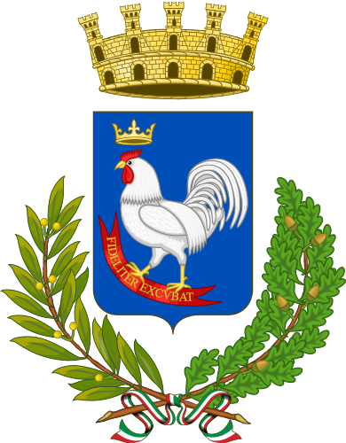

A heartfelt thank you to the institutions, supporters and scholars who make the preservation of the Gallipoli Tuna Fishery memory possible.

Institutional Patronage
For the protection of the city’s historical memory and the enhancement of intangible heritage linked to the ancient tuna fishery.
Visit the institutional website →Cultural Partner & Supporter
Historic hospitality group committed to promoting maritime identity and local culture.
Visit the official website →Web design and development
Gallipoli Tuna Fishery working group
Archival Research and Sources
Based on the sources of Bartolomeo Ravenna and municipal archives
For your photographic or documentary contribution, or as a witness of the sea, visit the Join or discover how we thank those who made it possible.